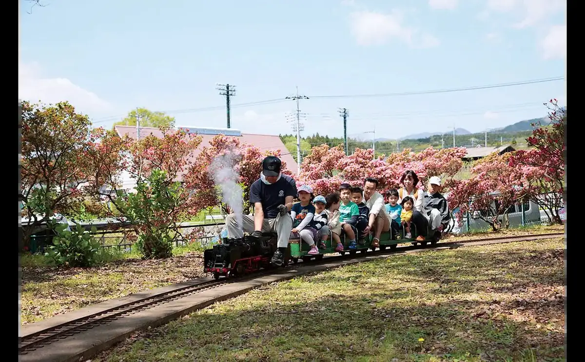
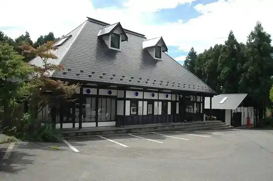
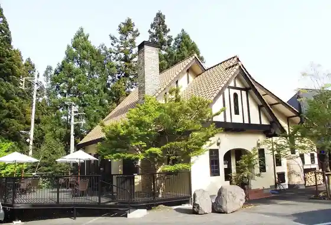

Shinto
Shinto · Gunma
Shinto
Highlighted on the Gunma map.

Sights
Chikyu Ya

Chikyu Ya Pan Workshop

Furutsu Kari (Shinto)
(Kabu) Usaburo Kokeshi
Mo no Zukuri Taiken Workshop Chikyu Ya Harunagurasu
Chikyu Ya (Experience)
Hachiman Hotaru no Sato
Shinto Furusato Park